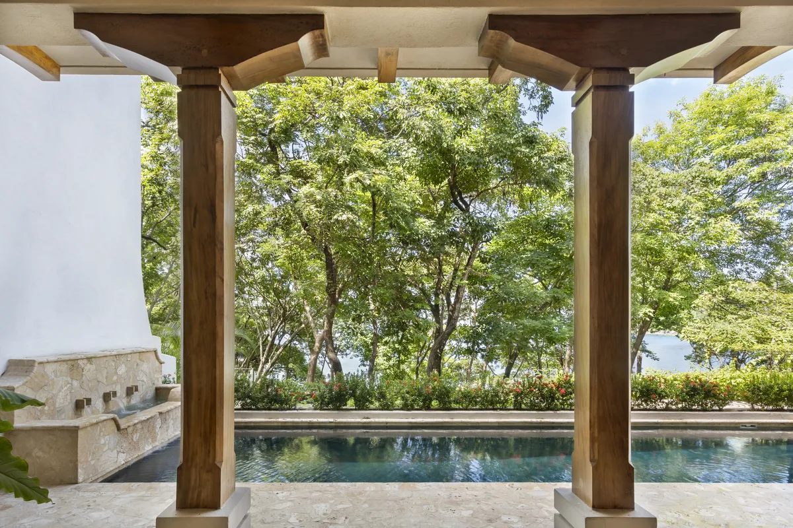
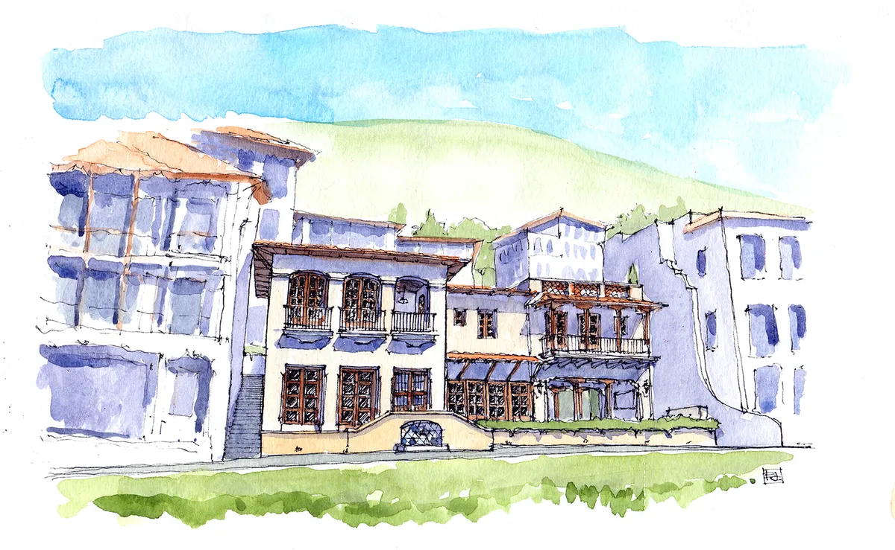
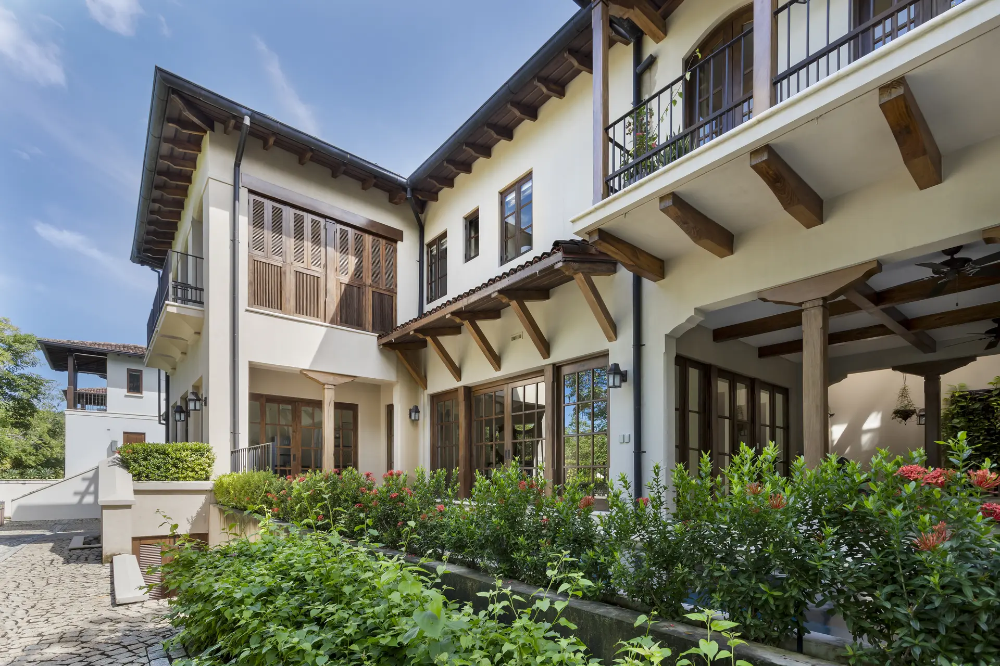
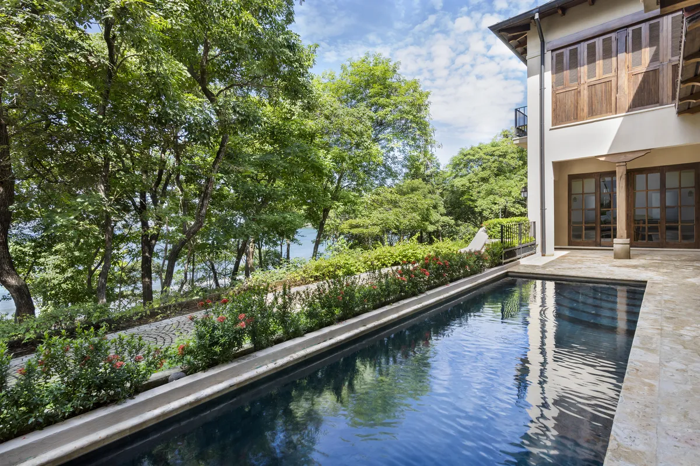
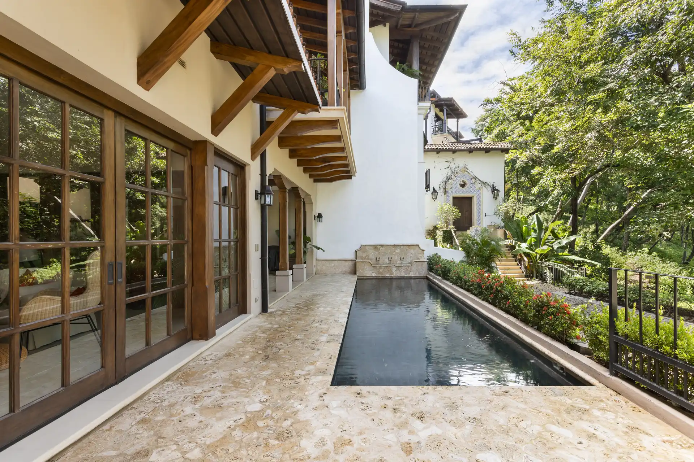
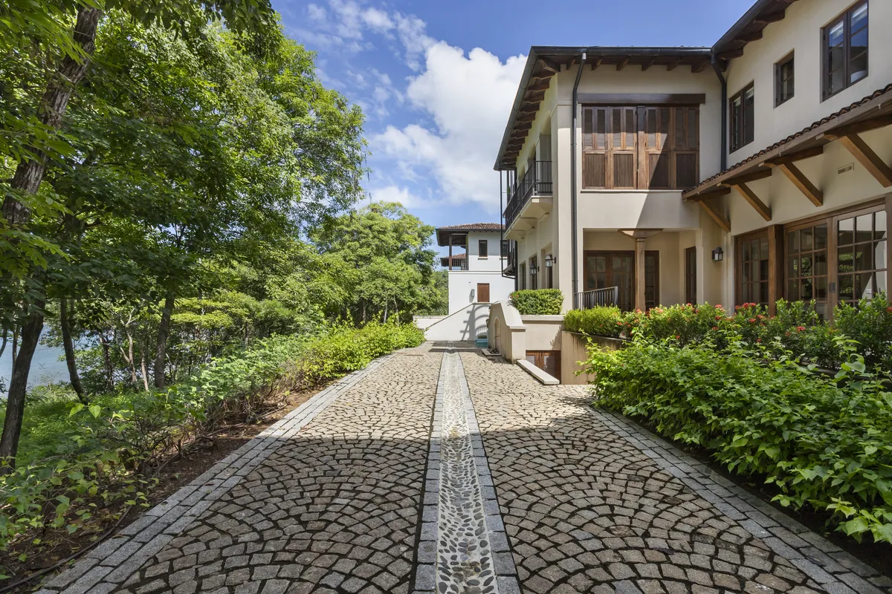

Fotografía por Topofilia Studio.

Residencia a la Medida · 350 m²
Casa Los Monos es una residencia unifamiliar en Las Catalinas que responde a la vegetación y topografía de su entorno inmediato, con una arquitectura que privilegia la sombra, la ventilación natural y la conexión visual con el paisaje circundante.


Su paleta contrastante de crema y café hace referencia a los monos capuchinos de cara blanca de Guanacaste. Una disposición en enfilade de los espacios de estar y comedor da a cada ambiente una vista compartida al océano Pacífico, mientras que el piso superior alberga un apartamento tipo estudio para alquiler de corto plazo.

El tradicional patio colonial se reinterpreta como una terraza de piscina: las jardineras en el borde de la propiedad brindan privacidad mientras disuelven el límite entre la casa y la vista al océano más abajo.


Fotografía por Topofilia Studio.
Ya sea que esté imaginando una nueva comunidad, una residencia distintiva o un proyecto urbano transformador, estamos aquí para ayudarle a hacer realidad su visión.
Contáctenos